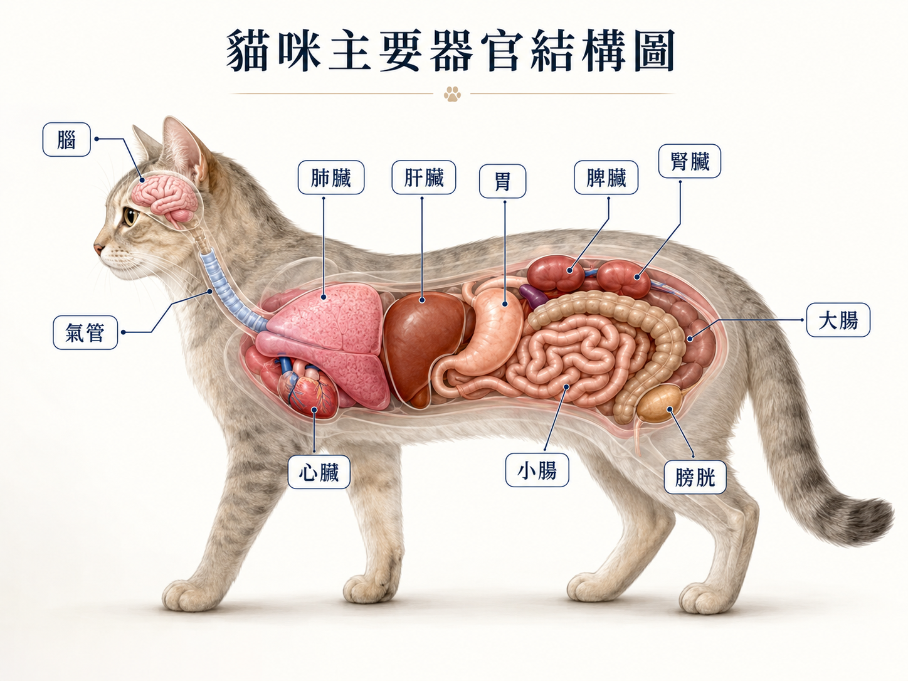

🫀 貓咪身體地圖
📚 認識你家主子的身體
點下面的器官,看它在哪、多大、負責什麼、平常怎麼顧 🐾
👆
怎麼用
點圖上會閃的圓點,或點下面的器官卡片,就會下拉看重點(位置、多大、負責什麼、怎麼顧)。器官大小是概略值,會依貓體型、年齡不同。

🐱 點圖上會閃的圓點,或點下面卡片,看每個器官的詳細
🖐️ 幫貓按摩小提醒
溫柔的撫摸與按摩能幫貓放鬆、增進信任、舒服地促進循環,尤其沿著臉頰、下巴、肩頸、背部。重點:力道要輕、順著毛、貓不喜歡就停。按摩是陪伴與放鬆,不是治療——器官不舒服請看醫生,別自己揉。📍 位置/大小頭骨內,成貓約 25–30 克(差不多乒乓球大小)。
⚙️ 負責什麼掌管行為、情緒、五感、平衡與全身協調。
🌿 平常怎麼顧環境穩定、減少緊迫;用玩具、探索、互動讓大腦有刺激,情緒穩了行為也穩。
⚠️ 要注意抽搐、原地轉圈、失去平衡、突然性情大變→ 儘快就醫。
📍 位置/大小頸部延伸到胸腔,連接喉嚨與肺,像一條有彈性的軟管。
⚙️ 負責什麼空氣進出肺部的主要通道。
🌿 平常怎麼顧遠離二手菸、精油擴香、粉塵與強烈香氛(貓呼吸道很敏感)。
⚠️ 要注意持續乾咳、呼吸有雜音、像卡東西→ 檢查。
📍 位置/大小胸腔內左右兩側,像海綿一樣包住心臟。
⚙️ 負責什麼把氧氣送進血液、把二氧化碳排出去。
🌿 平常怎麼顧室內通風、遠離菸味與刺激氣味。
⚠️ 要注意張嘴呼吸、肚子用力喘、舌頭/牙齦發紫→ 這是急診,立刻送醫!
📍 位置/大小胸腔偏左,大約一顆核桃/草莓大小。
⚙️ 負責什麼像幫浦一樣把血液(氧氣、養分)打到全身。
🌿 平常怎麼顧維持理想體重、規律活動;好主食本身就含足夠牛磺酸(貓心臟必需的胺基酸)。7 歲後健檢聽心音。
🖐️ 按摩胸口、下巴輕撫幫助放鬆與親密(放鬆用,非治療)。
⚠️ 要注意呼吸急促、稍動就喘、後腳突然無力冰冷(血栓)→ 急診。貓常見肥厚性心肌病(HCM),平常不易察覺,健檢很重要。
📍 位置/大小腹腔最前段、橫膈後方,是體內最大的器官。
⚙️ 負責什麼代謝營養、解毒、儲存養分、製造幫助消化的膽汁。
🌿 平常怎麼顧規律進食(貓連續 2–3 天不吃,很容易脂肪肝);絕不亂餵人類食物、成藥、精油。
⚠️ 要注意食慾明顯下降、嘔吐、牙齦或眼白變黃(黃疸)→ 儘快就醫。
📍 位置/大小腹腔前段、肝臟後方,空腹小、吃飽會脹大。
⚙️ 負責什麼暫存食物、用胃酸做初步消化。
🌿 平常怎麼顧少量多餐、定時定量;換糧要慢(7–10 天慢慢混),減少嘔吐與吐毛。
🖐️ 按摩剛吃飽別壓肚子;平時輕揉肚子貓喜歡就好,別用力。
⚠️ 要注意頻繁嘔吐、吐完仍不吃、吐血→ 檢查。
📍 位置/大小胃的旁邊、腹腔左側,長長扁扁的一條。
⚙️ 負責什麼過濾血液、參與免疫、儲存紅血球。
🌿 平常怎麼顧平常沒什麼特別感覺,靠定期健檢/超音波追蹤最實在。
⚠️ 要注意肚子摸起來變大、牙齦蒼白(貧血)→ 檢查。
📍 位置/大小一對,在腰部脊椎兩側,蠶豆/腰子形,成貓每顆約 3–4.5 公分(差不多一個大拇指)。
⚙️ 負責什麼過濾血液中的廢物、平衡水分與電解質、製造尿液,還幫忙造血。
🌿 平常怎麼顧多喝水最關鍵(濕食、多放幾個水點、流動飲水機);注意飲食中的磷;7 歲後定期驗腎指數(抽血+驗尿),早發現最重要。
🖐️ 按摩腰背保暖、輕柔順毛可以幫牠放鬆;但腎臟問題一定要看醫生,不能靠按摩處理。
⚠️ 要注意喝很多、尿很多、變瘦、精神差、口氣有阿摩尼亞味→ 貓最常見的慢性腎臟病徵兆,要驗。個別要怎麼補、怎麼調整飲食,問香菇爸依你家貓狀況給建議。
📍 位置/大小腹腔中段,細細長長盤繞很多圈(展開比身體長好幾倍)。
⚙️ 負責什麼消化食物、吸收大部分的營養。
🌿 平常怎麼顧選好消化的優質蛋白主食、換糧漸進;固定觀察便便狀態。
⚠️ 要注意長期軟便、吃很多卻變瘦→ 檢查吸收狀況。
📍 位置/大小腹腔後段,比小腸粗,通到肛門。
⚙️ 負責什麼吸收水分、把糞便成形、儲存後排出。
🌿 平常怎麼顧足夠水分與適量纖維;固定觀察排便次數與軟硬。
🖐️ 按摩便秘時,順著肚子由前往後、輕輕順時針撫摸可幫助放鬆(嚴重便秘仍要就醫)。
⚠️ 要注意2–3 天沒大便、血便、一直蹲卻上不出來→ 就醫。
📍 位置/大小下腹靠近骨盆前方,儲尿時像小氣球一樣會脹大。
⚙️ 負責什麼儲存尿液,滿了再排出。
🌿 平常怎麼顧多喝水、貓砂盆乾淨且數量足(貓數+1)、減少緊迫,降低泌尿問題。
⚠️ 要注意一直進砂盆卻尿不出、血尿、排尿哀叫 → 公貓尿道阻塞是會致命的急症,立刻送醫!
※ 本頁為衛教參考,非醫療診斷。器官大小為概略值,會依貓的體型與年齡不同。發現異常請儘快就醫;個別的營養與照顧,問香菇爸依你家貓狀況建議。